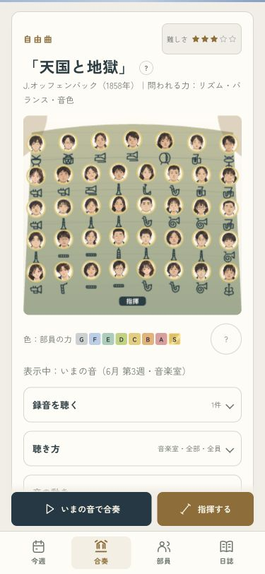
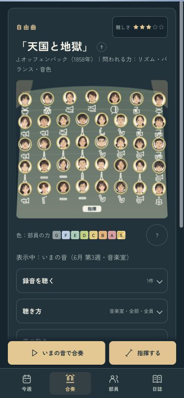
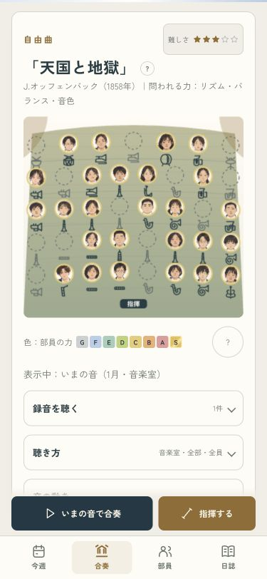
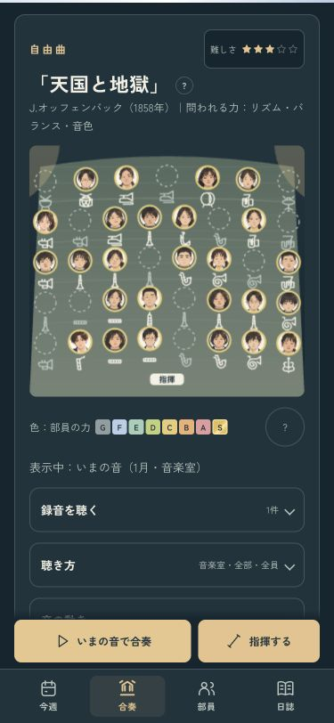

育ったあとの音を、次の合奏へ
相談・行事・冬の練習のあと、最初に聴く合奏から今の部員の力を使うようにしました。3年生が引退した新体制も、次の音と舞台へ反映します。
聴いている途中の録音はそのまま。止めると、今の部の音と譜面に戻ります。画面は375pxの表示確認用の見本です。
相談から試す · 冬の練習から試す · 行事から試す · 確認記録
相談後の合奏・ライト
相談後の合奏・ダーク
冬の練習後・ライト
冬の練習後・ダーク